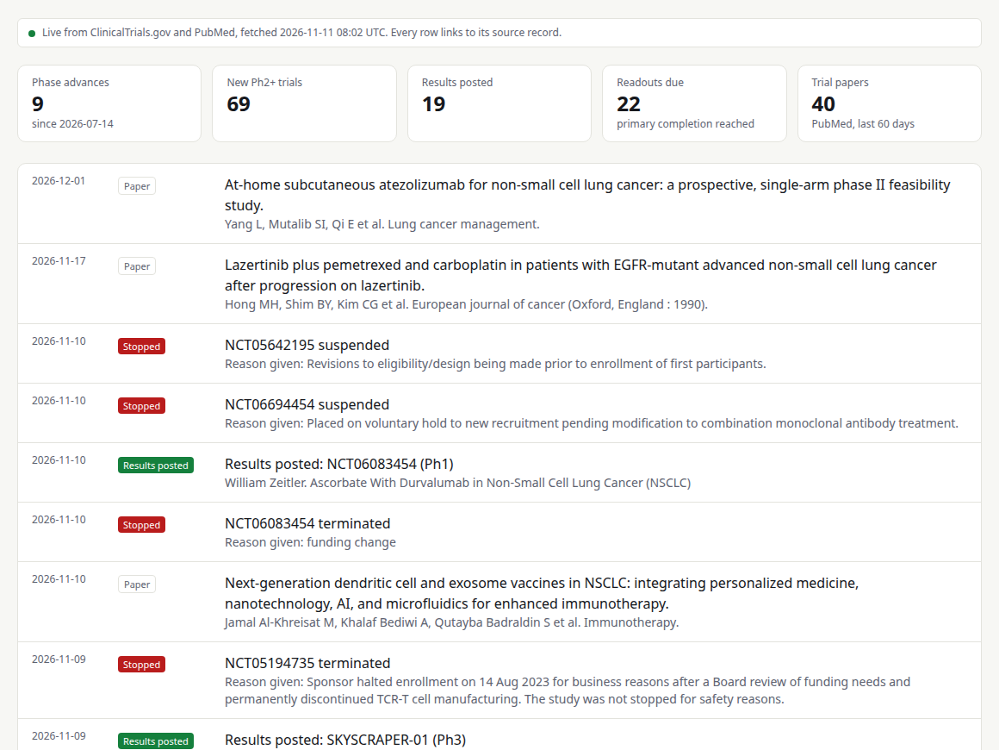
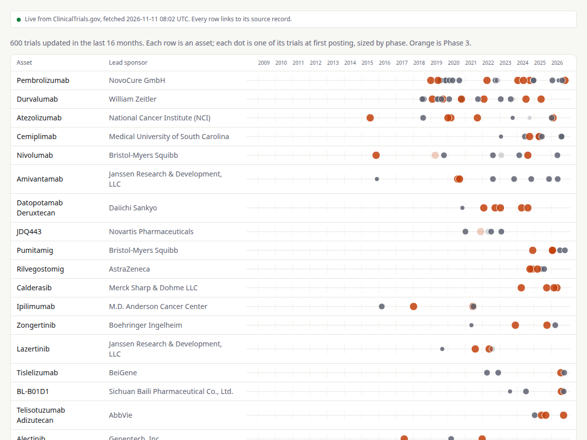
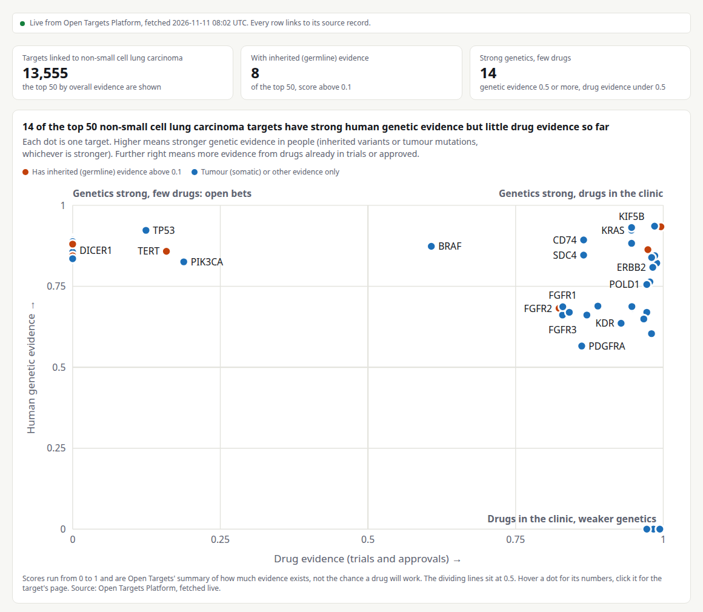
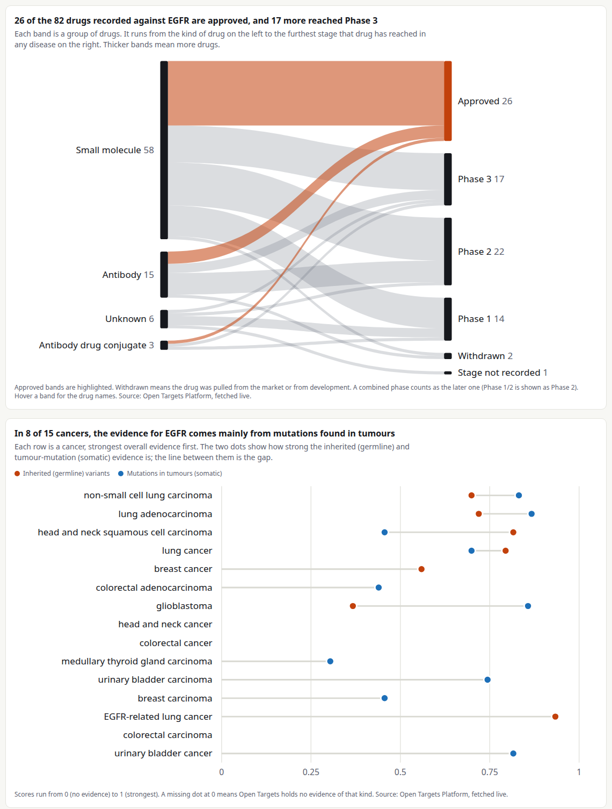
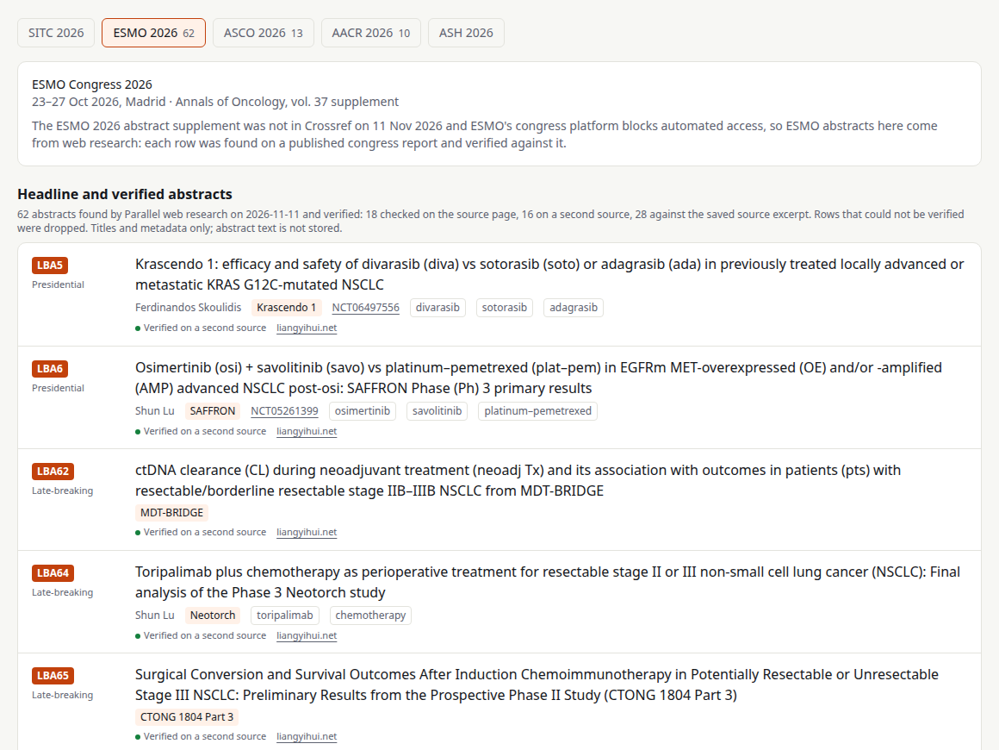

Oncology · Open data · Drug discovery
OncoSignal
An open oncology intelligence tracker. For one cancer at a time it shows what moved in the trial registry, who is running the trials, which targets have human genetics behind them, and what was presented at the 2026 meetings. Every row links to its source.
- Status: live, still growing
- Data: real and public only, no mock or sample rows
- Live app: onco-signal.up.railway.app
Where it started
OncoSignal was inspired by Khushi Shelat's clinical trial research demo for Parallel. Her demo showed how much of a trial landscape you can assemble from public sources. I wanted the same thing kept current for oncology, one cancer per page, with the genetic evidence for each target beside the pipeline.
The reason to build it is in my essay Curing All Disease, Ahead of Schedule. It argues that drug development is held back less by discovery than by herding: companies crowd onto the same validated targets. OncoSignal puts that herd on one screen, then asks where the human genetic evidence points that the pipeline has not gone yet.
I'm Ashish Makani (tp53; GitHub and X: inventcures), an academic in India working on computational protein and antibody design and drug discovery.
The aim
Surface what has been tacit
What can we uniquely surface to our target users, which so far has been tacit, and living in expert drug hunters' heads and mental models?
Show some insights, learnings, which no other comparable platform currently does, to our target users. That is the bar for what OncoSignal builds next.
On the live site
What is there today
Counts as shown on the live site on 11 November 2026. The site is still being built, so they will have moved by the time you read this.
What it shows
Five views for each cancer
The screenshots below are of the live site, taken on 11 November 2026. Click one to open that view.
1. Trial news
Events derived from changes in the registry: an asset's first Phase 2 or Phase 3 trial, new pivotal trials, results posted, readouts coming due, and stopped trials with the reason the registry gives. New trial papers from PubMed sit in the same feed.

2. Landscape
Every asset's trials on one timeline, sized by phase, so you can see who moved from Phase 1 to Phase 3 and when.

3. Lead investigators
Principal investigators and study chairs named on the registry, ranked by Phase 2 and later trials in that cancer, with their trials and PubMed output.
4. Genetically supported targets
Targets from the Open Targets Platform, with inherited (germline) and tumour-mutation (somatic) evidence split out. A chart sets genetic evidence against drug evidence, so the targets with strong genetics and few drugs stand apart.

Each target has its own page, with the drugs recorded against it by type and stage, and the evidence for it across cancers.

5. 2026 meeting abstracts
Abstracts from ESMO, ASCO, AACR, ASH and SITC 2026, filed by cancer, late-breakers first, each with its trial, NCT ID and source link. ASCO, AACR and SITC supplements are searched live through Crossref. ESMO and ASH abstracts are pulled with the Parallel API, and a row is kept only if its number and title were verified against a fetched source. Abstract text is never stored.

Ground rules
Real data only
- No mock, sample or synthetic data.Not in the app and not in its code.
- Every row links back to its source record.A trial to ClinicalTrials.gov, a paper to PubMed, a target to Open Targets, an abstract to its DOI or source page.
- If a source fails, the view shows the error.It never fills the gap with substitute data.
- Unverified abstracts are dropped.Web research finds candidates; only rows confirmed on a source page stay.
Sources
Where the data comes from
| View | Source |
|---|---|
| Trial news, landscape, investigators | ClinicalTrials.gov API v2 |
| Papers, investigator output | PubMed E-utilities |
| Targets | Open Targets Platform (EMBL-EBI) |
| ASCO, AACR and SITC abstracts | Crossref supplement DOIs |
| ESMO and ASH abstracts | Parallel web research, each row verified against a source page |
| Paediatric target flag | FDA Pediatric Relevant Molecular Target List |
Full details, including how each event is derived, are on the app's Sources & roadmap page. JSON for every view is at /api/i/<indication>/<view>.
Where it stands
Built versus planned
-
Live
Now
Live registry, PubMed, Open Targets and Crossref data on every view; verified ESMO and ASH abstracts; eighteen cancers and a paediatric view.
-
Next
Complete abstract books
Full harvests for ASCO, AACR and SITC, session-by-session pulls for ESMO and ASH, and topline results as structured fields.
-
Next
Readouts and deals
Which trial read out and what was reported, from company disclosures, with citations, joined to NCT IDs.
-
Later
Briefs, alerts and a herd map
A weekly brief per cancer, alerts on phase advances, and a map of pipeline crowding against genetic support.
Not medical advice. OncoSignal is a research tool built on public records. It is not a guide to treatment.